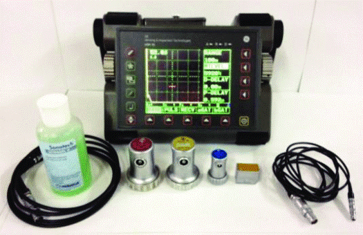

Got any Questions? Call us today!
Phone: +91-9932316960
Ultrasonic Testing (UT) uses high-frequency sound waves (ultrasound) that are above the range of human hearing to measure geometric and physical properties of materials, and flaw detection/evaluation. Ultrasound travels through different materials at different speeds (velocity). The speed of sound propagation in a given material is constant. Our experts make sure this quick, non-intrusive and cost-effective inspection is also reliable with advanced testing equipment like Einstein TFT – II, Krautkramer's and others.
Ultrasonic Thickness Measurement
The use of Ultrasonic non-destructive testing (NDT) to check material properties such as thickness measurement is used in all facets of the industry. The ability to gauge the thickness measurement of material without access to both sides of the test piece offers this technology a multitude of possible applications. Ultrasonic thickness gauge can be set up for metals, plastics, composites, fibreglass, ceramics & glass. It is completely non-destructive with no cutting or sectioning required. Ultrasonic thickness measurement is done by gages by precisely measuring how long it takes for a sound pulse that has been generated by a small probe called Ultrasonic Transducer to travel through a test piece & reflect back from the inside surface or for the wall. Measurement is made from one side in "Pulse/echo" mode because sound waves reflect from boundaries between dissimilar metals. Ultrasonic thickness measurement is performed for the measurement of the thickness of Hot Metals, through coating and scale measurement of the inner surface of the pipe.